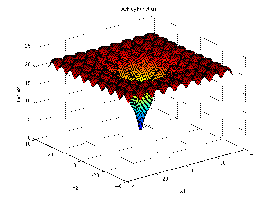
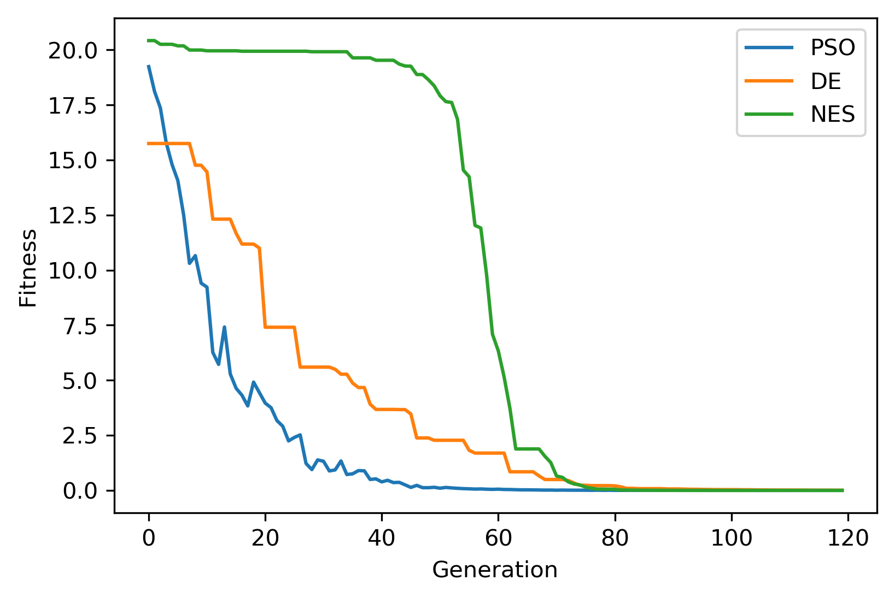

2. Example 2: Ackley with EA
Example of solving the popular continuous optimization function “Ackley” using NEORL evolutionary algorithms.
2.1. Summary
Algorithms: PSO, XNES, DE
Type: Continuous, Single-objective, Unconstrained
Field: Mathematical Optimization
2.2. Problem Description
The mathematical definition of Ackley is:
\[f(\vec{x}) = 20-20exp\Big(-0.2\sqrt{\frac{1}{d}\sum_{i=1}^{d}x_i^2}\Big)-exp\Big(\frac{1}{d}\sum_{i=1}^{d}cos(2\pi x_i)\Big) + exp(1)\]
The Ackley function is continuous, non-convex and multimodal. This plot shows Ackley in two-dimensional (\(d=2\)) form.
{kind=link}

\(\vec{x}\) domain: The function is usually evaluated on the hypercube \(x_i \in [-32, 32]\), for all \(i = 1, …, d\). The global minima for the Ackley function is:
\[f(\vec{x}^*)=0, \text{ at } \vec{x}^*=[0,0,...,0]\]
2.3. NEORL script
The solution below is for a 8-dimensional Ackley function (\(d=8\))
#---------------------------------
# Import packages
#---------------------------------
import numpy as np
import matplotlib.pyplot as plt
from neorl import PSO, DE, XNES
from math import exp, sqrt, cos, pi
np.random.seed(50)
#---------------------------------
# Fitness function
#---------------------------------
def ACKLEY(individual):
#Ackley objective function.
d = len(individual)
f=20 - 20 * exp(-0.2*sqrt(1.0/d * sum(x**2 for x in individual))) \
+ exp(1) - exp(1.0/d * sum(cos(2*pi*x) for x in individual))
return f
#---------------------------------
# Parameter Space
#---------------------------------
#Setup the parameter space (d=8)
d=8
lb=-32
ub=32
BOUNDS={}
for i in range(1,d+1):
BOUNDS['x'+str(i)]=['float', lb, ub]
#---------------------------------
# PSO
#---------------------------------
pso=PSO(mode='min', bounds=BOUNDS, fit=ACKLEY, npar=60,
c1=2.05, c2=2.1, speed_mech='constric', seed=1)
x_best, y_best, pso_hist=pso.evolute(ngen=120, verbose=1)
#---------------------------------
# DE
#---------------------------------
de=DE(mode='min', bounds=BOUNDS, fit=ACKLEY, npop=60,
F=0.5, CR=0.7, ncores=1, seed=1)
x_best, y_best, de_hist=de.evolute(ngen=120, verbose=1)
#---------------------------------
# NES
#---------------------------------
amat = np.eye(d)
xnes = XNES(mode='min', fit=ACKLEY, bounds=BOUNDS, A=amat, npop=60,
eta_Bmat=0.04, eta_sigma=0.1, adapt_sampling=True, ncores=1, seed=1)
x_best, y_best, nes_hist=xnes.evolute(120, verbose=1)
#---------------------------------
# Plot
#---------------------------------
#Plot fitness for both methods
plt.figure()
plt.plot(pso_hist['global_fitness'], label='PSO')
plt.plot(de_hist['global_fitness'], label='DE')
plt.plot(nes_hist['fitness'], label='NES')
plt.xlabel('Generation')
plt.ylabel('Fitness')
plt.legend()
plt.savefig('ex2_fitness.png',format='png', dpi=300, bbox_inches="tight")
plt.show()
2.4. Results
Result summary is below for the three methods in minimizing the Ackley function.
{kind=link}

------------------------ PSO Summary --------------------------
Best fitness (y) found: 6.384158766614689e-05
Best individual (x) found: [-1.1202021943594622e-05, 1.3222010570577733e-05, -1.0037727362601807e-05, 9.389429054206202e-06, 2.4880207036828872e-05, 1.6872593760849828e-05, 2.076883222303575e-05, 1.458529398292857e-05]
--------------------------------------------------------------
------------------------ DE Summary --------------------------
Best fitness (y) found: 0.0067943767106268815
Best individual (x) found: [-0.0025073247154970765, 0.0020192971595931735, -0.0015127342773181872, -0.0010888556350037238, -0.0015830291353966849, -0.000743962941194097, 0.0002963358699222367, 0.002260054765774109]
--------------------------------------------------------------
------------------------ NES Summary --------------------------
Best fitness (y) found: 1.5121439047582896e-06
Best individual (x) found: [ 5.01688814e-07 -1.12353966e-07 7.64184537e-08 1.37674119e-08
3.66277722e-07 -5.94627000e-07 3.11206449e-08 -6.19858494e-07]
--------------------------------------------------------------